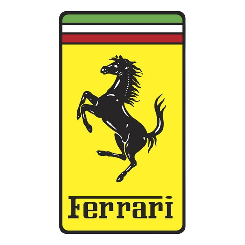

Ferrari

Image Credit: Mike Hales, Flickr
Ferrari and Formula 1 share an inseparable bond, making the Italian team synonymous with the pinnacle of motorsport. Founded by the legendary Enzo Ferrari, the Scuderia Ferrari has been a constant presence in every F1 season since the championship’s inception in 1950. Their iconic red cars have graced the tracks for over seven decades, captivating fans worldwide. Ferrari is the longest-serving team in the Formula 1 World Championship. Their passionate tifosi (fans) celebrate each victory as a testament to Italian racing excellence. Beyond the racetrack, Ferrari’s technical prowess extends to their road cars, blending performance, elegance, and luxury. The Prancing Horse logo symbolizes power, speed, and grace—an embodiment of Ferrari’s spirit. From the classic 1950s to the hybrid era, Ferrari’s F1 cars have evolved dramatically, representing a fusion of aerodynamics, engineering, and relentless pursuit of speed. F1 battles with other teams—whether it’s McLaren, Williams, or Mercedes—have produced some of the sport’s most memorable moments. Legendary drivers like Ayrton Senna, Michael Schumacher, and Lewis Hamilton have left an indelible mark. In recent years, Ferrari fields talented drivers like Charles Leclerc and Carlos Sainz as they chase the elusive Drivers’ and Constructors’ Championships. Ferrari’s influence extends beyond racing—they create hypercars, push boundaries in GT racing, and nurture young talent through the Ferrari Driver Academy. The prancing stallion remains a symbol of Italian craftsmanship, speed, and excellence. Whether roaring down the straights of Monza or navigating the tight corners of Monaco, Ferrari continues to be a blend of passion, heritage, and the pursuit of victory.
Click here to learn more about Ferrari
Mclaren

Image Credit: Wikimedia Commons
McLaren Racing, founded in 1963 by Bruce McLaren, is one of the most iconic names in British motorsport. With a legacy spanning over five decades in Formula One, McLaren’s success has been nothing short of breathtaking. The team has secured the constructors’ championship eight times, and its drivers have included legends like Mika Hakkinen, Lewis Hamilton, Alain Prost, and Ayrton Senna1. McLaren’s technical prowess extends beyond the racetrack; their road cars blend performance, elegance, and luxury. From the classic 1950s to the hybrid era, McLaren’s F1 cars have evolved dramatically, representing a fusion of aerodynamics, engineering, and relentless pursuit of speed. The team has graced iconic circuits like Monza, Silverstone, and the glamorous Monaco street circuit. Fierce battles with other teams—whether it’s McLaren vs. Ferrari or other contenders—have produced unforgettable moments. In recent years, McLaren has continued to push boundaries, aiming for net-zero carbon emissions by 2030 through sustainable practices and innovations. Whether roaring down the straights or navigating tight corners, McLaren remains a blend of passion, heritage, and the pursuit of victory
Click here to learn more about Mclaren